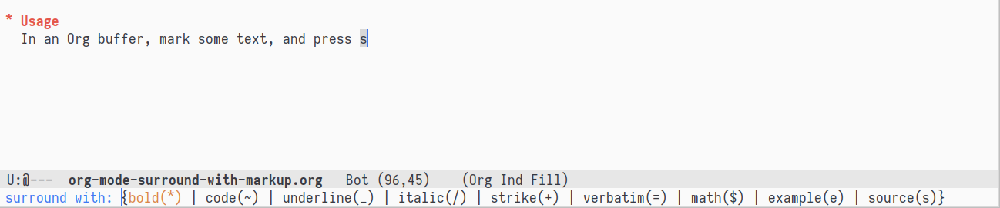

Insert Syntax Markup Efficiently in Org-mode
Table of Contents
1 Org Syntax
Since Org is plain text, adding markups (bold, verbatim, etc.) is done by inserting certain characters at the beginning and end of text. It is annoying when you need to adding markups to some text, since it requires you to:
- move cursor to the start position
- insert some charaters (such as
*) - move cursor to the end position
- insert some charaters (such as
*)
Here is a piece of Elisp that I used to make this process smoother. It
allows you add common markups around a text area by interactively
choosing from a menu provided by ido.
2 Install
First, adding the following function definations to your init file,
such as ~/.emacs.d/init.el:
(defun my-surround-text-with (c &rest close) "insert some surround text to the region" (when (and (stringp c) (or (null close) (stringp (car close)))) (let* ((p (point)) (m (mark)) (left-char c) (right-char (if close (car close) c)) (pos-left (min p m)) (pos-right (+ (length c) (max p m))) (pos-finish (if (> p m) (+ pos-right (length right-char)) pos-left))) (save-excursion (goto-char pos-left) (insert left-char) (goto-char pos-right) (insert right-char)) (goto-char pos-finish)))) (defun nth-elt (elt list) "Return element number of ELT in LIST." (let ((loc (length (member elt list)))) (unless (zerop loc) (- (length list) loc)))) (defun my-org-surround () "surround the region with some string" (let (options left right c idx) (mapc (lambda (l) (push (car l) options) (push (cadr l) left) (push (caddr l) right)) org-surround-options) (setq options (reverse options)) (setq left (reverse left)) (setq right (reverse right)) (setq c (ido-completing-read "surround with: " options)) (setq idx (nth-elt c options)) (my-surround-text-with (nth idx left) (nth idx right)))) (defun my-org-s (n) "insert s if mark is not active, else add markup" (interactive "p") (if mark-active (my-org-surround) (dotimes (x n) (insert "s"))))
Then adding the following configurations:
;; the menu options (setq org-surround-options `( ("bold(*)" "*" "*") ("code(~)" "~" "~") ("underline(_)" "_" "_") ("italic(/)" "/" "/") ("strike(+)" "+" "+") ("verbatim(=)" "=" "=") ("math($)" "\\(" "\\)") ("example(e)" "#+begin_example\n" "\n#+end_example\n") ("source(s)" "#+begin_src \n" "\n#+end_src\n") )) ;; add key bindings (define-key org-mode-map (kbd "s") 'my-org-s)
You can also customize the variable org-surround-options, adding
entries in the format ("name", "beginning characters" "end
characters").
3 Usage
In an Org buffer, first mark some text, and press s, then select from
the options in the echo area. It uses ido, so incremental search is
available. Sweet.
